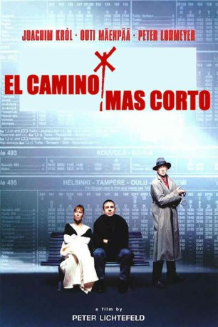

#5830 Zugvögel – einmal nach Inari
 
 IMDB-Wertung: 7.4 / 10
IMDB-Wertung: 7.4 / 10  Metascore: 0
Metascore: 0 
Der schüchterne Bierfahrer und Hobby-Fahrplanexperte Hannes bricht auf in Richtung Polarkreis. Denn im nordfinnischen Inari lockt der 1. Internationale Wettbewerb der Kursbuch-Spezialisten. 25.000 Pfund winken dem Sieger. Nicht genug, daß Hannes sich auf der Zugreise halsüberkopf verliebt. Er stolpert in einen internationalen Geldfälscherring. Auch weiß Hannes nicht, daß er vom cool-cleveren Kommissar Fanck gejagt wird. Der verdächtigt ihn zu Unrecht des Mordes und versucht, ihn vor Inari abzufangen. Ein regelrechtes Wettrennen entbrennt...
Jahr: 1998
Dauer: 83 Minuten
FSK: 6
Land: Deutschland Studio: Prokino FilmverleihTonspuren:
Untertitel:
Auflösung: SD (720x576) Größe: 896 MB
Genre: Komödie, Krimi, Liebe
Regisseur: Peter Lichtefeld
Drehbuch: Hajime Isayama
Soundtrack:
Darsteller:
 Joachim Król als Hannes Weber
Joachim Król als Hannes Weber- Outi Mäenpää als Sirpa Salonen
 Peter Lohmeyer als Kommissar Franck
Peter Lohmeyer als Kommissar Franck Jochen Nickel als Lothar
Jochen Nickel als Lothar Nina Petri als Frau Kößner, Sekretärin
Nina Petri als Frau Kößner, Sekretärin- Peter Franke als Karl-Heinz, Inari-Fan
- Kati Outinen als Inkeri, Baggerfahrerin
 Peter Franzén als Lako's Lover
Peter Franzén als Lako's Lover- Ciro de Chiara als Gianfranco Camoglio
- Yan Schoenefeld als
- Antje Schmidt als Die Kleine vom Supermarkt
- Charlie Hendricks als Kalle, Entlassener
- Johannes Herrschmann als Chef
- Dagmar Sachse als Schachspielerin
- Anna Posthoff als Kind im Zug
- Hilmi Sözer als Harry, Assistent
- Oliver Marlo als Lako, Schlafwagenschaffner
- Beatrix Albl als Frau im Trenchcoat
- Didi Jünemann als Hein, Zugprüfer
- Vibeke Andersen als Schwedische Polizistin
- Friedrich Küppersbusch als Schröder, Fahrplanexperte
- Juuso Hirvikangas als Bettler in Helsinki
- Miklos Königer als Eindringling im Schlafwagen
- Kari Väänänen als Asko, Milchfahrer
- Pertti Koivula als Inari Polizist
- Marko Lakobrija als Wettkampfleiter
- Nina Vorbrodt als Karen Higgens
- Gisela Nohl als Wettkampfleiterin
- Pauli Pentti als At the Border Control
- Alisa Aho als
- Petra Burchartz als
- Mario Espe als
- Helen Janssen-Gerwalin als
- Brigitte Grube als
- Matti Halonen als
- Juhani Heikkinen als
- Michael Lejsek als
- Liisa Nikula als
- Antti Pekari als
- Karin Piepenbring als
- Malte Pleger als
- Karl-Heinz Posthoff als
- Peter Rosenbröjer als
- Ritva Savela als
- Ahti Similä als
- Niina Tanskanen als
- Paula Voutilainen als
- Dagmar Tinschmann als (beim Wettbewerb
- Jun Schäffer als (beim Wettbewerb
- Chuys Saggtu-Sackey als (beim Wettbewerb
Datei: X:\1998\Zugvögel – einmal nach Inari (1998, FSK6, 720x576).mkv seit 26.03.2017
Festplatte: HD 1996-2002
 Es gibt insgesamt 86 Filme in der Gruppe '1998'
Es gibt insgesamt 86 Filme in der Gruppe '1998'